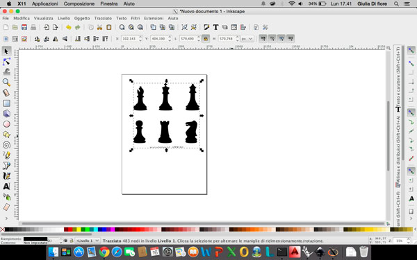

This week we had to design, make, and document a press-fit construction kit.
This was the first time I used a laser cutting, and for assignement of this week I decided to make a portable version of chess.
My initial idea was to create a "book" of wood in which the cover served as a chessboard, while inside there are the pieces in their own space.
Considering it was my first experience with this machine, it seemed more reasonable to use the cardboard: it is less expensive than other materials and for all the tests that I should have done it seemed like the best choice.
Morehover the use of cardboard, in my opinion, will let you understand immediately how the cut changes according to the type of settings that you set.
In fact, the first step was to find the right settings for the operations I needed (cutting, engraving,...).
I finally got the following values:
- to cut the cardboard I set power 100% - speed 7%;
- to engrave the cardboard I set power 30% - speed 100%;
- to remove the frist layer of the cardboard (leaving intact the other) power 95% - speed 100%;
After making tests on the cardboard I started drawing the design on Rhino, using a different layer for each operation (cutting, engraving,...). First of all I designed the main structure of the "book" in which I then inserted the board:
Using Inkscape, I got a vector image of chess pieces that I later imported into Rhino to create the pieces and the spaces for them.

Once imported pieces in Rhino I've modified them by adding a lower range to make sure that you can fit on the board when you use it.
To differentiate the white pieces from those blacks I engraved the cutting area, front and back, of the blacks pieces.
Once sure of the project (layer, positions, ...) I ran the last test to make sure everything is ok, after which I started cutting.
Cutting accuracy is impressive, even on cardboard that is a material of variable thickness and not regular.
At the end the final result is this:
As a first attempt I can be satisfied of my work.
I'd try to make it in wood, in order to solve all the structural problems that I encountered using the cardboard. I must also admit that the use of cardboard for the realization of my first project was the right choice in fact, if I had chosen another one, given the numerous trials and tests, I only wasted material certainly more expensive.